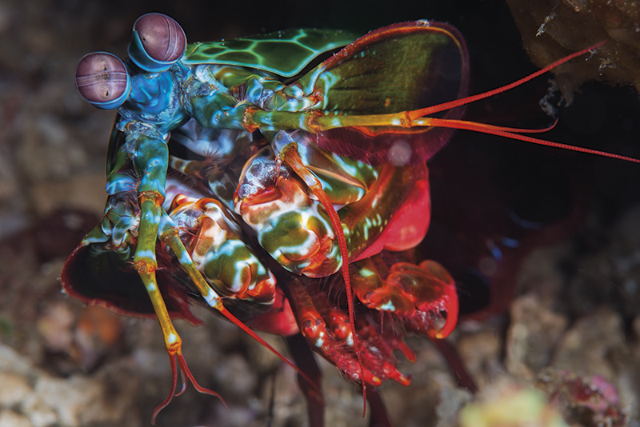
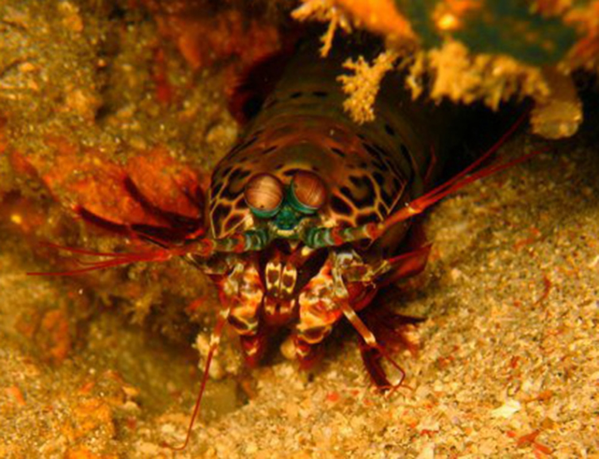
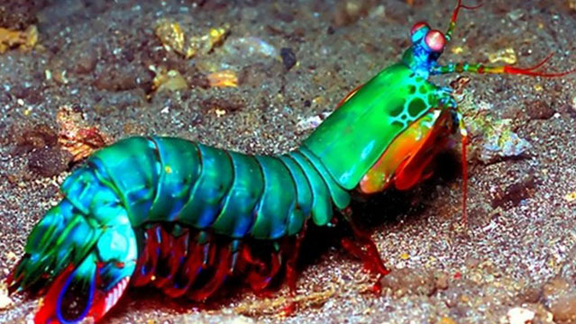
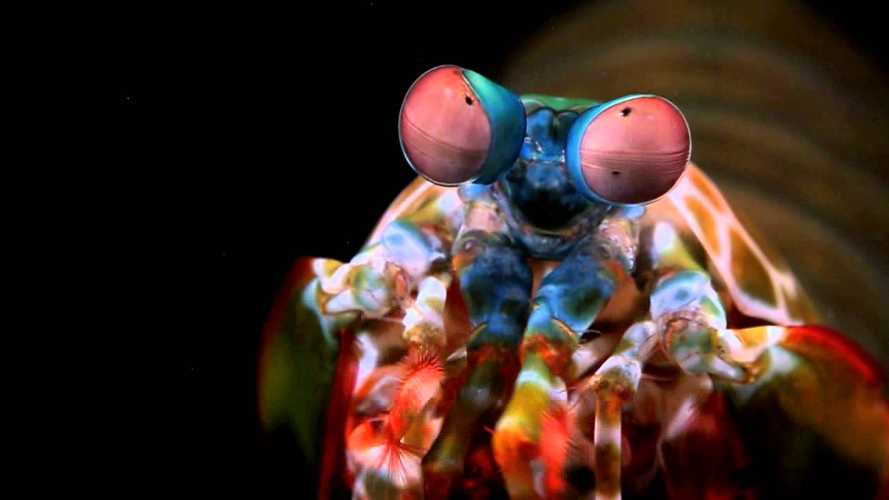

Fatos sobre o Stomatopoda
Lagosta-boxeadora
O Odontodactylus scyllarus é classificado como um crustáceo marinho, não passa de 30cm de comprimento. Sua classificação é: pertencente ao reino Animalia, do filo Crustacea, com a classe Malacostraca, subclasse Hoplocarida, ordem Estomatopoda, família Odontodactylidae, ggénero Odontodactylus e por fim a espécie que é O. scyllarus. Considerado carnívoro suas principais presas são caranguejos, moluscos, gastrópodes e, inclusive, peixes.
Habitat natural
Odontodactylus scyllarus vive em tocas que constrói nos fundos dos corais, ou através de buracos deixados por outros animais, em rochas e substratos próximos de corais de recifes a cerca de 40 metros de profundidade.
Força
Esse pequeno ser marinho possui o soco mais forte já desvendado no mundo animal. Relativo à velocidade de uma bala de calibre 22 e ataca com a força de 1.500 newtons, esse animal é capaz de matar suas presas até quando erra seu golpe. O movimento relativo ao soco é capaz de ferver a água ao seu redor.

Beleza
Tem como característica morfológica a segunda pata torácica modificada parecida com a de um louva deus. Além disso, é extremamente colorida, o que a torna bela, única e associada com palhaços, por isso também é conhecida como a Lagosta Louva a Deus Palhaço.
Visão
O seu sistema visual, que tem chamado atenção de cientistas e pesquisadores, é o mais complexo de todo o reino animal. Contando com 16 cones é capaz de ver dez vezes mais cores do que nós, seres humanos, que possuímos apenas 3 cones. Além de detectar o espectro visível, ainda é capaz de detectar o infravermelho e a ultravioleta.
